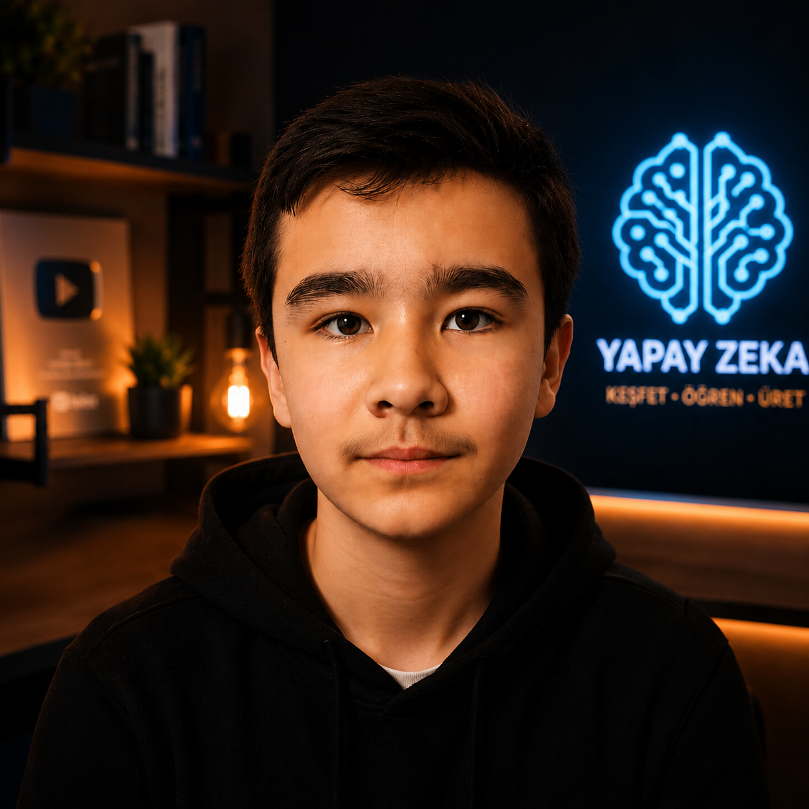

İLK TEMAS
Bilgisayarı tüketmek yerine onunla üretmeye başladım.
7 yaşında kod, algoritma ve yapay zekâ kavramlarıyla tanıştım. Merak, kısa sürede günlük bir öğrenme pratiğine dönüştü.
7 yaşımdan beri yazılım ve yapay zekâyla uğraşıyorum. Bugün bu birikimi, gerçek problemlere odaklanan hızlı ve düşünülmüş dijital ürünlere dönüştürüyorum.

Yaklaşım
Kod yazmanın ötesinde, doğru problemi bulup onu sade ve kullanılabilir bir ürüne dönüştürmekle ilgileniyorum.
7 yaşında yazılım ve yapay zekâ dünyasına girdim. Python, Java ve C# ile kurduğum temel bugün AI-native ürün geliştirme pratiğine dönüştü.
AI araçlarını yalnızca hız için değil; daha çok alternatif denemek, daha iyi kararlar vermek ve fikirleri çalışan sistemlerle doğrulamak için kullanıyorum.
Problemi tanımlama, kapsam ve yol haritası
Responsive, erişilebilir ve hızlı arayüzler
Fikirden çalışan ürüne hızlı iterasyon
Net hiyerarşi ve kullanıcı odaklı deneyim
Yolculuk
Merakla başlayan yolculuk, bugün ürün geliştirme disiplinine dönüştü.
7 yaşında kod, algoritma ve yapay zekâ kavramlarıyla tanıştım. Merak, kısa sürede günlük bir öğrenme pratiğine dönüştü.
Python, Java ve C# ile programlama temelleri; problem çözme, mantık ve sistem kurma becerileri.
Prompt tasarımı, hızlı prototipleme ve AI destekli geliştirme iş akışlarını gerçek projelerde birleştirdim.
UcuzToken ile AI erişimini, yönlendirmeyi ve geliştirici deneyimini tek bir üründe birleştirdim.
Seçili proje
Fikirden yayına alınmış ürüne.
CANLI ÜRÜN · 2026
$ curl -X POST /v1/messages# Routing to upstream...200 OK { "content": "Hello!" }/v1/messages Claude
/v1/chat/completions GPT
Farklı AI modellerine tek API üzerinden erişim sağlayan; geliştiriciler için daha az maliyet, daha az kurulum ve daha güvenilir bir üretim deneyimi sunan platform.
Claude, GPT, Gemini ve diğer modelleri tek erişim noktası üzerinden çağırır.
Birden fazla upstream hesap arasında güvenilir yönlendirme ve otomatik devralma sağlar.
Daha az öde, daha çok üret: geliştirici deneyimini doğrudan ürün değerine bağlar.
Çalışma şekli
Kullanıcıyı, problemi ve başarı ölçütünü netleştir.
En kritik akışı çalışan bir ürüne dönüştür.
Gerçek kullanımdan gelen sinyallerle iyileştir.
İletişim